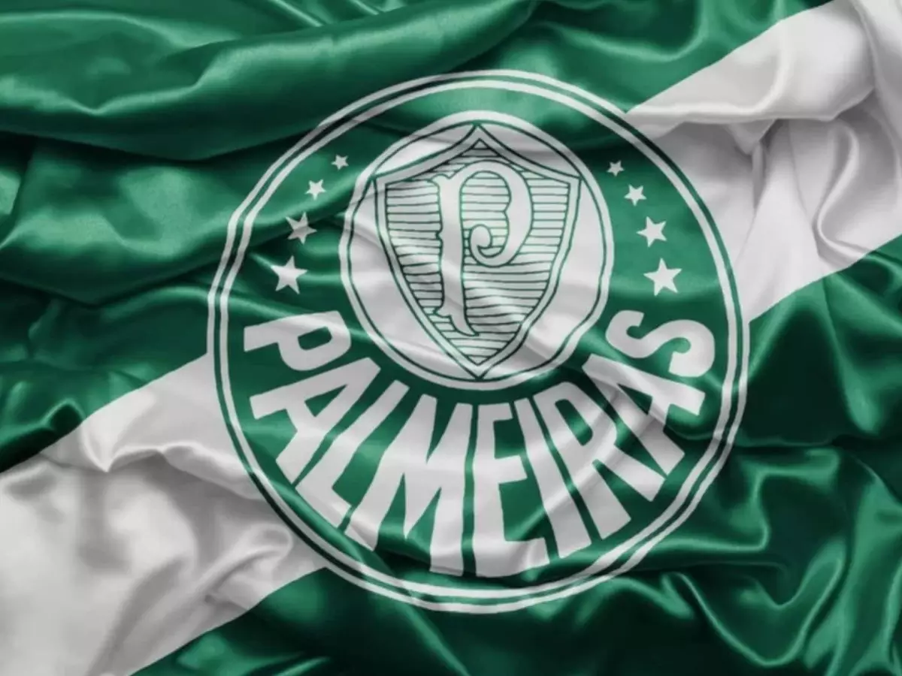

Sociedade Esportiva Palmeiras
História, títulos, ídolos e paixão pelo Verdão.

O Palmeiras é um dos clubes mais tradicionais e vitoriosos do futebol brasileiro.
Fundado em 26 de agosto de 1914 como Palestra Italia, o clube construiu uma história marcada por grandes jogadores, títulos e momentos inesquecíveis.
🟢 Verde + ⚪ Branco = 💚 Verdão
Neste site você vai conhecer um pouco mais sobre a história, os títulos, os ídolos e a casa do Palmeiras.
A Sociedade Esportiva Palmeiras foi fundada em 26 de agosto de 1914, na cidade de São Paulo, por imigrantes italianos.
Originalmente, o clube recebeu o nome de Palestra Italia. Em 1942, durante a Segunda Guerra Mundial, o clube passou a se chamar Sociedade Esportiva Palmeiras.
Ao longo de sua história, o Palmeiras conquistou diversos títulos nacionais e internacionais e se tornou uma das maiores equipes do futebol brasileiro.
A torcida palmeirense é conhecida pela paixão pelo clube e pelo apelido de Verdão.
O Palmeiras conquistou a Copa Libertadores da América em diferentes momentos de sua história, incluindo os títulos de 1999, 2020 e 2021.
O Verdão possui uma das histórias mais vitoriosas no Campeonato Brasileiro.
O Palmeiras também conquistou a Copa do Brasil em diferentes gerações.
O clube possui uma importante história em competições internacionais e mundiais.
Conhecido como "Divino", Ademir da Guia é um dos maiores jogadores da história do Palmeiras.
O goleiro Marcos se tornou um dos maiores ídolos da história do clube e ficou conhecido como "São Marcos".
Atacante importante na conquista da Libertadores de 1999, Evair marcou época com a camisa verde.
Dudu se tornou um dos principais jogadores do Palmeiras na era recente do clube.
O Nubank Parque é a casa do Palmeiras e está localizado na cidade de São Paulo.
O estádio moderno recebe partidas de futebol, shows e grandes eventos.
A arena se tornou um dos principais símbolos da fase moderna do Palmeiras e proporciona uma grande experiência para os torcedores.
O Palmeiras é tradicionalmente conhecido como Verdão por causa da sua camisa verde.
O clube foi fundado por imigrantes italianos e originalmente se chamava Palestra Italia.
O porco se tornou um dos principais símbolos associados à torcida palmeirense.
O Palmeiras possui uma história centenária, marcada por grandes jogadores, títulos e uma torcida apaixonada.
🟢 Sociedade Esportiva Palmeiras
🏆 Um dos maiores clubes do Brasil
💚 Orgulho da torcida palmeirense
🏟️ Allianz Parque